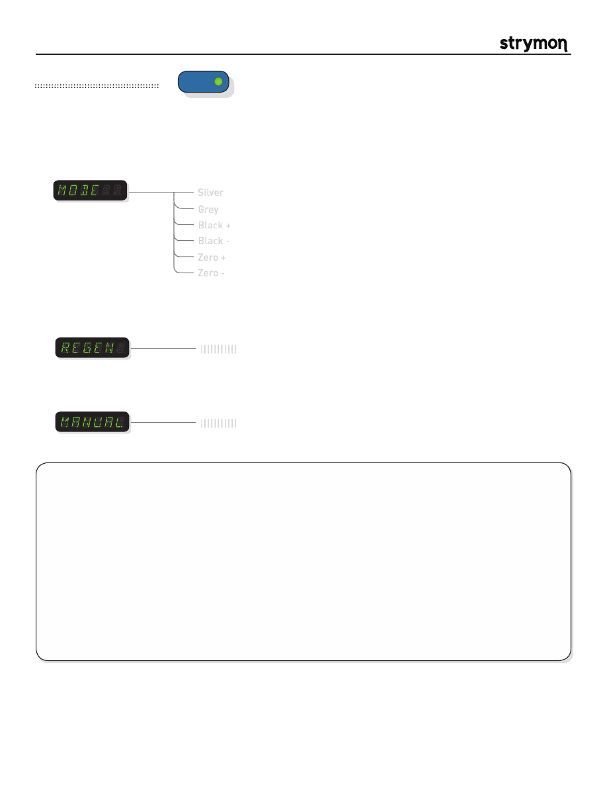

Mobius
-
User Manual
®
pg 9
Mode
:
Sets the currently active Flanger algorithm.
TYPE
push (bank/BPM)
hold (save)
push (param)
hold (global)
VALUE
PARAM 1
PARAM 2
B
TAP
A
SPEED
DEPTH
LEVEL
BANK DOWN
BANK UP
FILTER
DESTROYER
VIBE
ROTARY
FLANGER
PHASER
CHORUS
FORMANT
AUTOSWELL
VINTAGE TREM
PATTERN TREM
QUADRATURE
®
Mod Machines: Flanger
Silver
Grey
Black +
Black -
Zero +
Zero -
A deep and rich Flanger with a wide pallete of sonic possibilities. Six separate modes cover a variety of flanger sounds. Each
separate algorithm uses dBucket technology at its heart for authentic recreations of classic bucket brigade flangers.
PARAMETERS:
|||||||||||
|||||||||||
Regen
:
Adjusts the amount of feedback in the flanger’s delay line. Adjust high for more extreme
flanging sounds.
Manual
:
Controls the delay time of the flanger. Higher settings produce higher frequency flanging
effects and vice versa.
TIPS & TRICKS:
SILVER mode
creates textured, airy flanging. Turn up the Depth and Regen params to add color to stacatto rhythm
parts, or turn back for a mellower chorus-like effect.
GREY mode’s
logarithmic LFO creates a dramatic sweep that lingers at the higher registers when the DEPTH knob is
high and the speed is slow. Increase the REGEN parameter to intensify the effect.
BLACK mode’s
super-wide sweep creates a signature ‘swoop’ at high depth settings. At fast speeds, this mode will get
crazy.
In the
ZERO modes
with the MANUAL parameter at minimum, the ‘top’ of the sweep just passes through zero.
Increasing the MANUAL parameter moves the sweep even further past zero. Increase the DEPTH to add lower
frequency flanging at the ‘bottom’ of the sweep.
- a re-creation of the classic “silver box” flanger
- the classic “grey box” flanger featuring its unusual LFO waveshape
- one of the most sought after flange sounds in history, with positive regeneration
- the black box flanger with negative regeneration
- a through zero flanger with positive regeneration
- a through zero flanger with negative regeneration